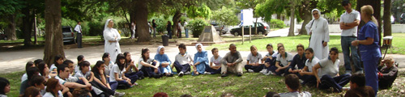

-

Sitio en construcción, disculpe las molestias
-

Sitio en construcción, disculpe las molestias
-

Sitio en construcción, disculpe las molestias
-

Sitio en construcción, disculpe las molestias
-

Sitio en construcción, disculpe las molestias

MADRE FUNDADORA
- Introducción
- Su niñez
- Su adolescencia y juventud. La Vocación
- Su edad madura. La fundación y dirección de la Congregación
- Hacia la vuelta al Padre
- Beatificación
- Sólo para mujeres fenomenales
Introducción
María Petkovic, fue una mujer profundamente enamorada de Dios, sensible a las necesidades de su pueblo, compasiva con los niños huérfanos y abandonados, con los más pobres, los ancianos solos y con todos los que sufren. Anunciaba la Buena Noticia del Evangelio con energía, amor y talento.
De joven, dirigía diversas asociaciones espirituales y caritativas. Se dedicaba pacientemente a la enseñanza escolar y a la educación en la fe de los niños y de los más pobres. Pronto optó por el carisma franciscano de misericordia y humildad.
En el año 1920 fundó la Congregación "Hijas de la Misericordia de la Tercera Orden Regular de San Francisco" para dar testimonio del amor misericordioso de Dios Padre, especialmente hacia los que sufren, los pobres, los ancianos y los niños abandonados en la sociedad. Su vida y su obra quedaron como un don de auténtico amor Dios y a la humanidad y como un punto de encuentro de Dios con el hombre que descubre a su Padre y lo ama.
Esta familia religiosa que realiza su misión en varios países del mundo, en 1936 llegó y se quedó en nuestra Patria Argentina.
Su niñez
María Petkovic nació el sábado 10 de diciembre de 1892 en la ciudad de Blato, perteneciente a la isla Korcula de Croacia. La mencionada ciudad era el centro más importante de la isla, contaba en ese entonces con cerca de 10.000 habitantes y era considerada una zona agrícola donde la mayor parte de las tierras estaban en poder de unas pocas familias adineradas, una de las cuales eran los Petkovic Kovac.

Blato, ciudad natal de María Petkovic
Según cuenta María en su autobiografía, en la tierra de sus padres trabajaban muchos cientos de aparceros.
Su padre Antonio Petkovic Kovac, al enviudar de la primera esposa, se casó nuevamente con María Marinovic.
De la primera tuvo dos hijas: Elena y Catalina y de la segunda, once hijos de los cuales tres fallecieron siendo muy pequeños. Por lo tanto en la familia crecieron 10 hijos: seis mujeres y cuatro varones, María es la sexta del segundo matrimonio. Fue bautizada a los doce días de su nacimiento el 22 de diciembre de 1892 en la única parroquia que existe en Blato hasta el día de hoy denominada de “Todos los Santos” y que se encuentra a 50 metros de la casa de María.

Parroquia de Blato
Según María, su padre practicaba en alto grado la justicia, el amor y la misericordia. Era un hombre de fe y oración, constante en el cumplimiento de los mandamientos de Dios y de la Iglesia. Amaba a sus trabajadores y a los pobres, se interesaba por ellos proporcionándoles lo que necesitaban. Era callado, tranquilo y de pocas palabras. Ella lo amaba a tal punto de convertirlo en su ideal de vida después de Jesús.

Antonio Petkovic y María Marinovi
Falleció en 1911 cuando María tenía 18 años. Su madre era una mujer piadosa, que educaba a sus hijos en el amor a Dios, en la disciplina y en las virtudes de la sencillez, de la humildad, de la abnegación y del trabajo.
“De esta manera, María creció constantemente en la escuela de las virtudes cristianas y de la caridad, donde su espíritu recibió las primeras impresiones de amor hacia Dios y hacia el prójimo” (“Por amor del Señor". Pág.16. Autobiografía"). Su madre sobrevivió varias décadas a su esposo y fue testigo de la entrada de María en el convento, a lo que se conformó no tanto porque fuera su voluntad, sino por aceptar la de Dios.
María estaba dotada de dones y talentos naturales visibles en ella desde muy pequeña. Familiares y vecinos admiraban su amabilidad, sus cualidades morales, su belleza física (cabellos dorados, ojos celestes, grandes y puros). A medida que iba creciendo, se manifestaba más compasiva, comprensiva y sociable. Era cariñosa y maternal con los niños especialmente si eran huérfanos. La pobreza del prójimo le repercutía en el corazón y se le grababa profundamente en su memoria.
No habiendo cumplido aún los cinco años, debido a su extraordinaria inteligencia, comenzó la escuela elemental como oyente, ya que en ese entonces no existía aún el Jardín de Infantes.
La escuela funcionaba en un edificio de sus padres. Muy pronto comenzó a leer, a escribir y hacer cuentas adelantándose a sus compañeritos. Al año siguiente accedió al segundo grado de la escuela elemental y recibió el Sacramento de la Confirmación a los 6 años encontrándose por vez primera con el joven Obispo de Dubrovnik Monseñor José Marcelic quien sería su confesor y guía espiritual. Durante los dos últimos años de la escuela elemental, María tenía además una maestra particular que le daba lecciones de literatura.
Así a los 11 años terminó el sexto y último año primario con excelentes calificaciones y con una edad inferior al que corresponde. Cuando ella tenía 9 años, cuenta en su autobiografía, comenzó a sentir deseos de ser educada en un colegio religioso para servir al Señor. Recién en 1904 llegarán a su pueblo natal unas religiosas llamadas “Siervas de la Caridad”, quienes al establecer allí un colegio, darán a María la oportunidad de cursar con ellas la escuela media.
“En su casa, desde los primeros días de su vida hasta cuando se separó de la familia, venían a menudo, casi semanalmente y por largos periodos, frailes franciscanos, dominicos y también de otras Ordenes religiosas, y ello porque en el pasado, el difunto abuelo Francisco...había reservado para los padres dos o tres habitaciones en su propia casa, a fin de que se encontrasen bien como en su propio convento. (“Por amor al Señor". Pág.16-17. Autobiografía)
“María pertenecía a la familia más rica de la región, sin embargo, no sentía ninguna satisfacción de poseer una casa grande y cómoda, buena comida y excelentes muebles; deseaba más bien tener una casita cualquiera; le gustaba la vajilla de madera, como la de sus vecinos pobres. Con solo cuatro años, iba donde ellos, observaba incrédula su pobreza y al mismo tiempo experimentaba un gran deseo de vivir en una casa así, y de tener solamente las pocas cosas necesarias. Quería comer la polenta junto con ellos en una única olla negra y beber de una única escudilla de madera, que servía a todos y para todos” ("Por amor del Señor". Pág.19. Autobiografía)
“A los cinco o seis años ...aquella noche...mirando hacia el cielo la cara iluminada de la luna, mientras la tía recitaba el Credo, me sentía tan inmersa en Dios que no lograba pronunciar en voz alta las palabras del Credo porque ya, como en una realidad, percibía y contemplaba al Padre celestial, el que todo abarca, y pensaba dentro de mi ¿por qué se dice “creo en Dios Padre”? ¿Acaso se puede dudar de su existencia?, y yo le decía así ¡oh Dios mío, Tú solo eres y nos sostienes! ¡Tú eres el Sumo!. En aquel instante contemplé a Dios que extendía los brazos hacia mí y al mismo tiempo encerraba en sí a mí y a todo el resto, sosteniendo y abrazando al universo...” ("Por amor al Señor". Pág.21. Autobiografía)
“Durante el primer año escolar...se enfermó gravemente con hemorragias en diversas partes del cuerpo: ojos, oídos, etc. María observaba con cuánto estupor todos se interrogaban, incluso el médico sobre qué podría ser aquella enfermedad... Le sobrevino además fuertes dolores articulares y transcurrieron dos o tres meses en grave estado...” ("Por amor del Señor". Pág.24. Autobiografía) Desde entonces María por el resto de su vida experimentará frecuentes dolores en las piernas y mientras otras niñas se divertían jugando y saltando, ella no podía correr. Para evitar que los demás se dieran cuenta de su dolor ella se escondía. Dice en su autobiografía “El Señor lo permitió y la escogió de antemano para sufrir desde la infancia”

María Petkovic a los 12 años
En los primeros años de infancia la llevaban a jugar con una primita en una ciudad vecina, también Jelica Bosnic era su compañerita de juegos en su pueblo; más adelante su madre no la dejaba ir más que a la escuela y a la iglesia y solo permitió a una compañera de 4to. año, Bebica Carevic que la visitase en su casa. Sus padres eran muy severos en la protección de sus hijos.
Su adolescencia y juventud. La Vocación
María Petkovic - Su Adolescencia
Al terminar la escuela primaria, María deseó poder ingresar en algún colegio. En Korcula, las religiosas Dominicas habían abierto un colegio y los padres de algunas de sus compañeras las habían enviado allí para continuar sus estudios, porque en Blato no había una escuela media. María estaba triste al ver a las demás ir al colegio, mientras que a ella no le era permitido aunque el estudio le gustaba mucho.
Su padre don Antonio temía perderla como a la hija mayor que se hizo religiosa y por eso decidió no mandar más a ninguna de sus hijas a estudiar en los colegios por miedo a que se hicieran religiosas. Al término de la escuela primaria los hijos varones continuaban los estudios superiores en Viena o Zagreb, mientras que las mujeres debían dedicarse a la música o a la costura y al estudio privado en casa. Esta decisión le cortaba las alas a María que sufría en silencio porque amaba a su padre.
Una vez hizo algo muy agradable y él, que también la quería mucho, le dijo: «¡Pídeme lo que quieras y te lo daré!». Entonces le dijo: «Papá, ¡déjame ir al colegio!». El padre le dijo: «¿Tienes realmente ganas de dejar a tu padre?». María insistió: «¡Déjame ir al menos por un tiempo, para que pueda estudiar y educarme como las demás, a quienes sus padres han dejado ir!». «Sí, María, pero a ti el colegio no te sirve». Ella insistía: «Pero soy yo quien quiere ir; ¡por favor, déjame!». Su padre le replicó: «¿Serías capaz de irte y dejarme después que he puesto en ti mis esperanzas de consuelo y sostén?». Ante estas palabras, María no volvió a insistir.
Después de pocos meses, llegaron a Blato las Hermanas Siervas de la Caridad, y abrieron una escuela para niños y para las jóvenes que habían cursado los estudios primarios abrieron la escuela media. Don Antonio, entonces, permitió a María que fuese a clases, pero no que habitara con ellas. Debía volver regularmente a casa. Allí cursó la escuela media y aprendió también italiano y bordado. Así, María recibió una buena educación y tuvo la posibilidad de observar de cerca la vida religiosa por la que comenzaba a sentirse atraída.
En aquel tiempo, los niños no eran admitidos a la primera comunión antes de los doce o trece años, de modo que María tuvo que esperar sus doce años, luego de que su mamá le diera su consentimiento.
Desde hacía tiempo, María tenía un fuerte deseo de Jesús y de conocer las cosas sagradas, por eso estaba muy contenta al saber que podía ir al catecismo directamente con el párroco, Don Pedro. La alegría de María, duró poco porque su madre, decidió no enviarla al catecismo junto con los demás niños, sino hacerla estudiar en casa, y enviarla solamente la última semana, para que el párroco la examinara. Esto destrozó su corazón y todas sus expectativas y sueños. María no respondió, pero no sabía cuál era la razón: ¿Tal vez su mamá quería que comenzara a distinguirse de aquellos niños pobres y traviesos que antes del catecismo corrían por la plaza?. Su casa se encontraba a pocos metros de la iglesia y cuando oía a los niños, corría a la ventana para verlos y cuando al mediodía salía para comprar el pan, al pasar cerca de la iglesia oía las voces de los niños y del sacerdote, y se decía: «¡Qué felices son estos niños! ¡Si fuese pobre, yo también tendría esta suerte de asistir y escuchar la enseñanza para la comunión!».
Un día tuvo que tragarse una severa llamada de atención de parte de Sor Desideria que ignoraba la situación de María, por su ausencia del catecismo. La religiosa la acusaba de ser soberbia porque no asistía junto con los demás. María nada dijo para justificarse, le besó el crucifijo de la hermana y se fue a llorar su pena, a un lugar remoto de su enorme casa.
Finalmente llegó aquella feliz y tan esperada última semana que precedía a la primera comunión. María contaba con el hecho de poder, al menos en aquellos pocos días, escuchar las lecciones del párroco, pero su madre, el primer día, la amonestó severamente para que se hiciera interrogar de inmediato por el párroco. Para este fin debía sentarse en la primera fila con el objeto de hacerse notar por él. Ubicarse en el primer banco delante del sacerdote era señal de que uno se sentía preparado para el examen. María sabía que a los demás niños se les había enseñado el catecismo con "ejemplos prácticos", mientras que ella había estudiado las fórmulas de la doctrina y temía que este hecho la habría expuesto al ridículo, pero no se le pasó por la mente desobedecer a su mamá. A su llegada delante de la iglesia, de inmediato fue rodeada por los demás niños quienes la miraron de un modo extraño porque tenía en las manos el libro del catecismo. Permaneció tranquila y se fue derecho a la iglesia, sentándose en la primera fila, como se le había ordenado. El sacerdote comenzó a interrogarla siguiendo el método de los "ejemplos prácticos" utilizados por él, mientras que María le respondía siguiendo cuanto había aprendido del libro. El párroco quiso ver su libro y le dijo: «Eres una niña inteligente; te daré este libro de 'explicaciones prácticas' y tú, en estos dos o tres días, lo estudiarás para que completes tus conocimientos». Ella se sintió muy feliz y se preparó con gran recogimiento para la primera comunión.
Llegó el día tan esperado y que recordaría durante toda su vida, porque desde aquel momento ardía en ella cada vez más el amor por Jesús.
Leía de buena gana la vida de los santos. De una manera particular, le entusiasmaban las palabras de Jesús contenidas en el santo Evangelio. En su habitación había hecho un altar donde había colocado un cuadro con la imagen del Sagrado Corazón, tomado de la habitación de su madre. Todas las mañanas se levantaba temprano, antes que su familia para rezar, luego iba a la parroquia para escuchar la Misa y recibir la Eucaristía y por la tarde se encargaba de la hora de Adoración porque pasó a integrar la asociación de las Hijas de María y del Buen Pastor, conociendo a tantas otras jóvenes con quienes compartir el camino de amor hacia el Señor.
Un día de marzo de 1906, después de la Comunión, María se quedó un tiempo más largo en la iglesia para orar. De improviso sintió un malestar físico y regresó a su casa encontrando a su madre agitada por el mucho trabajo y le dijo: «¡Mamá, ahora yo me encargo de todo!». Luego de terminar las tareas, cayó muy enferma. Estuvo tan mal que todos, incluidos los médicos, pensaron que no tenía remedio, que se iba a morir al punto que llamaron a un sacerdote para confesarla. A un sacerdote que se hospedaba en la casa le dijo que tenía tantos deseos de ingresar a un convento y se estaba muriendo sin siquiera haber conocido uno. En medio de su gravedad con mucha fe tomó agua de Lourdes que tenía en la mesita de luz, se sintió mejor y se durmió amaneciendo bien. Después de veintiún días, la enfermedad había cesado. Librándose milagrosamente de la muerte, María comenzó a no interesarse más ni por los juegos ni por las compañeras. Se había vuelto muy pensativa y una melancolía inexplicable le ocasionaba mucha tristeza en el corazón. La búsqueda de la soledad se iba transformando en ella en deseo de ingresar a un convento. Leía libros espirituales que le daba el párroco, y buenos libros de literatura que le proporcionaban sus hermanas. Un día, mientras ponía en orden la habitación de los sacerdotes que se hospedaban en su casa, halló sobre la mesa una biografía de Santa Rosa de Lima y se puso a leerla sintiéndose invadida de una gran alegría y emoción al descubrir en aquella santa los mismos sentimientos que llenaban su espíritu. Desde entonces la tomó por amiga espiritual y llevó su imagen siempre consigo.
Los domingos, cuando su mamá acompañaba a sus hermanas a pasear, pedía quedarse en casa con su hermanita Milka. Sus hermanas y hermanos, al ver su comportamiento un poco extraño, retirado, hacían de todo para distraerla, pero surtía el efecto contrario: María se aislaba cada vez más. Un día, con su hermano Iván, fue a Babina, a su casa de vacaciones que estaba a orillas del mar. Se pusieron en camino por la mañana muy temprano, en el momento en que los primeros rayos del sol caían, María observaba atónita aquel espectáculo pensando: “esas delicadas gotas de rocío que ondeaban con la caricia del viento, si tienen la fortuna de permanecer en las hojas, el sol las atraerá, transportándolas a las alturas para hundirlas en sí”. Le pareció que también su vida habría podido orientarse en ese sentido. Entonces, dijo a su hermano: «Iván, ¡mira esas gotas de rocío en las hojas! ¡Con ellas comparo mi vida! ¡Sí, mi vida se parece a ellas! Si el viento sacudiese las hojas del Espíritu, podría caer por tierra y le faltaría ese maravilloso brillo de la candidez; mi vida espiritual se rompería sobre el terreno. En cambio, si permanezco firme en mi puesto, puedo ser atraída por el sol del amor divino, me sumergiría en Él y en Él viviría por la eternidad». En Babina hacía largos y silenciosos paseos con Iván a la orilla del mar y se quedaba sola muchas veces y aprovechaba para sumergirse en sus pensamientos, observar el cielo y el mar, contemplar a Dios al que anhelaba. Su hermano un día le dijo: «Sabes María, estoy contento contigo, pero me temo que terminarás en un convento».
Monseñor Jose Marcelic
En septiembre de 1906, con ocasión de la visita pastoral del Mons. José Marcelic, obispo de Dubrovnik. María lo conoció teniendo la posibilidad de hablar en privado con él, le confesó su deseo de ingresar a un convento y de consagrar su vida a Dios; el Obispo le puso la mano sobre la cabeza y la bendijo. Desde entonces Mons. Marcelic comenzó a guiarla espiritualmente por correspondencia y le ordenó tener un diario espiritual, anotar todo lo que le sucedía, lo que hacía, lo que experimentaba y lo que pensaba. Su vocación, se consolidó sobre todo con las palabras que Jesús dijo al joven: «Si quieres ser perfecto, ve, vende todo lo que tienes, deja todo, niégate a ti mismo, luego ven y sígueme» (Mt 19,21). María se puso, entonces, a observar a sus hermanas amadas por sus maridos y su vida cómoda. Veía a las compañeras galantear. Se daba cuenta de cuanto bienestar se gozaba en su propia casa. Gozaba del afecto de sus hermanos, del amor especial de su padre. Un joven pretendiente se había presentado con cartas de petición de matrimonio, declarando que la habría esperado hasta que cumpliera la edad justa, aunque tuviera que esperar diez años. La voz de Jesús, le llegaba misteriosamente a sus oídos: «Si quieres, deja todo, ven y sígueme», entendía ser libre para escoger, esta condición de amable libertad fue la que tocó y atrajo totalmente su corazón. Jesús la conquistó; la embelesó desde la Cruz: sus llagas la obtuvieron como esposa. El 21 de noviembre de 1906 hizo «su promesa de amor a su Señor, su voto de amor eterno».
María iba a Babina, permaneciendo allí un par de meses. Las primeras veces iba con su padre quien durante el viaje permanecía callado porque rezaba el rosario, también durante la permanencia en Babina, habitualmente era silencioso, a veces se sentaba a su lado y le leía algo, mientras ella hacía labores. Fue allí donde María pudo tocar de cerca la gran bondad y piedad de su padre para con las familias pobres del lugar, que él con su tío Don Marcos habían instalado allí, construyéndoles pequeñas casas. Apenas llegaba, lo primero que hacía era enviar a cada familia, a través de María, alguna ayuda.
La primera vez, María objetó que era justo preparar primero su almuerzo y después pensar en aquella gente. Su papá le dijo: «¡No, primero están los pobres!». Cada día reunía a los niños y les distribuía galletas. Al atardecer, les enseñaba el catecismo y las lecciones escolares. Cuando María llevó a doce de ellos a Blato para la primera comunión, permanecían mudos y turbados ante la belleza de la iglesia parroquial de Todos los Santos, y se comportaban hasta el punto que no pasaron inadvertidos.
En abril de 1911 falleció Antonio, su amadísimo padre en quien siempre encontraba comprensión, luego la vida para María se volvió más difícil. En particular, su madre llegó incluso a perseguirla a causa de su rechazo de tantas y excelentes propuestas de matrimonio. En efecto, unos nueve ricos pretendientes la habían pedido en matrimonio. A siete de estos no fue difícil rechazarlos, les decía que habían llegado ¡tarde, porque ya se había comprometido!, o que no tenía intención de casarse. Algunos se sirvieron incluso de la intervención del obispo para que los recomendara y dijese alguna palabra para convencerla, seguros de que ella, como persona devota, habría escuchado su consejo. Pero el obispo les respondía: «¡Dejen en paz a esa joven!». En particular con dos fue bastante dura la situación, porque muchos se habían interpuesto, comenzando por su madre, y luego sus cuñados, hermanos, etc. Su madre le suplicaba que no tirara por la ventana la posibilidad de ser rica y feliz. Pero visto que María no la escuchaba, comenzó a reprenderla y a herirla. Una vez, contestó: «Y bien, si ese sujeto es tan bueno, adóptenlo ustedes y quédense con él, déjenme a mí ir por mi camino, porque de esta manera me quitan la vida: ¡así no puedo vivir!». Ella comenzó a adelgazar y decaer, entonces, los hermanos y los cuñados quisieron hacerla viajar para que se distrajera y se despertara en ella algún interés por la vida mundana. María tuvo que luchar contra todos sus parientes juntos. Fueron pruebas tremendas, todavía más agudas por el hecho de que no podía expresar su decisión por miedo del contragolpe, ¿qué podía hacer, pobrecita? Ya estaba firme en su decisión; aún más, estaba ligada por una promesa perpetua y día tras día esperaba el mejor momento para irse a algún convento, pero al no ser mayor de edad, no podía hacerlo sin permiso.
Se hundió en una tristeza de ánimo semejante a la muerte. Se sintió sola, sin ninguna ayuda, como si también Jesús la hubiese abandonado. En ese estado de profunda aflicción, deseaba desaparecer. Por una parte, no soportaba la idea de ser causa de pena para la vida de otros y por otra, quería ser libre para ir por su camino. Tenía que dar una respuesta decisiva y, por consiguiente, la espada habría atravesado los corazones de sus seres queridos. Al final, se sentó y escribió su respuesta: «¡No tengo intención de casarme!».
Al igual que su padre, María no simpatizaba con los ricos, parecía tener corazón solamente para los pobres, pero no era libre para ir junto a ellos, no podía visitarlos ni ayudarlos abiertamente, porque su madre la reprendía, le prohibía frecuentarlos. María no se atrevía a contradecirla. Decidió, huir para irse a un convento de clausura y perder definitivamente sus huellas. En uno de esos momentos de exaltación quemó todos sus apuntes espirituales, el diario e incluso las cartas que le había escrito el obispo. Se dirigió a su cuñado alcalde, quien, después de la muerte de su padre era su segundo tutor. Le dijo que si la querían bien, no debían atormentarla, porque no habrían obtenido otra cosa que debilitarla más; pero aunque débil, en secreto se iría a un convento de clausura.
Su familia se entristeció hasta las lágrimas y le rogaron que se quedara con ellos al menos otros cinco o seis años, porque sabían que serían llamados a las armas en vista de la guerra ya anunciada. La situación era que sobre la mamá y sobre María recaía el peso de la conducción administrativa del patrimonio familiar. La madre comenzó a organizar almuerzos especiales a los que invitaba a algunos huéspedes con la única finalidad de persuadir a María de que desistiera de su decisión. En una ocasión de éstas María dijo: «hay demasiados niños inteligentes y abandonados, que no tienen quien los eduque y les muestre la vida, y que, en cambio, podrían ser preparados para asumir compromisos a favor de la humanidad». «Estos me llaman para que les haga las veces de madre. ¡No estoy llamada a sacrificarme como madre de cinco o seis hijos, sino de centenares, de millares de niños abandonados!».
María, con la intención de irse secretamente lejos, al convento de clausura de las Clarisas, tramitó la cédula de identidad, pero su familia se las arregló para que la autoridad judicial vigilara el puerto de Prigradica y el de Vela Luka y así se desvanecieron todos sus planes. Mientras tanto, seguía debilitándose y perdiendo la salud; su madre decidió llevarla a un especialista en Split. Revisada por él dijo: «La joven sufre terriblemente; su corazón ya no tiene fuerzas, está muy débil, si no le conceden lo que desea, tengan la seguridad de que no vivirá más de dos meses!». La mamá se turbó mucho y volvió muy pensativa. María le dijo: «ya no puedo más, no sigan atormentándome con sus prohibiciones, dejen que me vaya en paz a un convento, ahora mismo. ¡Si no me dejan ir por las buenas, me iré igualmente y no me volverán a ver!». Asimismo el obispo de Split, donde la había llevado su madre, dijo: «¡Dejen que la joven se vaya en paz, si es lo que desea!». La madre trató de explicarle que María era débil y bastante sensible para una vida tan rígida como la del convento de clausura. Éste replicó que Jesús mismo da la fuerza necesaria al alma. La madre se arrepintió de haber acudido a él y se apresuró a irse.
Así, con la tristeza en el corazón, la acompañó al convento de las Siervas de la Caridad en Split. Ellas la recibieron como pensionista para recuperarse, mientras tanto estudiaba también el italiano y el alemán.
María, una vez más, se dirigió a Mons. Marcelic para pedir su consejo, escribiéndole que ya no podía contener más su vocación por un convento de clausura y que se estaba preparando para el viaje; pero, al mismo tiempo, era perseguida por una voz interior que le pedía sacrificarse quedándose en el mundo, alejándose de los suyos, como él mismo le había escrito. Y concluía: «por eso, desolada al ver la ceguera y las injusticias del mundo y tanta miseria, quiero irme a algún lugar solitario, donde, en silencio, llorar y dar la debida satisfacción al Señor». En espera de la respuesta, hizo una novena al Sagrado Corazón. Al término de la novena, llegó la carta del obispo Marcelic: «¿Tú, qué irías a hacer en un convento de clausura? ¿Qué quisieras hacer por la gloria de Dios y para ayudar a los necesitados? No tendrías la libertad para actuar, a lo sumo, quizá podrías poner o levantar la mesa, desperdiciando, así, sin un motivo específico, el tiempo precioso de tu vida y las capacidades que Dios te ha dado. En el convento de clausura tendrías una vida breve, como la de tu difunta hermana Sor Gertrudis. Tú dices que no puedes soportar tanta miseria, corrupción y engreimiento del mundo, y sufres porque no puedes ayudar; por eso quieres irte para poder llorar por estas miserias. Pero no está bien escapar y dejar la casa mientras está en llamas; ¡llorar por eso no es de héroes! Al contrario, hay que trabajar con todas las fuerzas posibles para apagar las llamas y salvar lo que se pueda. Te aconsejo, pues, que vuelvas y te comprometas con tu pueblo en la educación de las jóvenes. Con el tiempo podrás abrir una casa religiosa; pero cada cosa a su tiempo». María inmediatamente volvió a casa en espera de ulteriores directivas. Corría el año 1914 y la gran guerra mundial asolaba Europa sembrando muerte y miseria: viudas, huérfanos, hambre, enfermedades... Sobre este trasfondo se iba definiendo la vocación de María.
En septiembre de 1917, María recibió otra carta del obispo Marcelic, en la que le decía: «Todo está en tu buena voluntad, en eso debes ser completamente libre, debes decidir tú sola, libremente, luego estarás más tranquila y tendrás mayor mérito ante Dios. ¡Todo será solamente tuyo! Dios nos ama, respetando nuestra libertad, lo que hacemos espontáneamente le agrada más. Te digo lo que pienso y lo que deseo, pero la mía no es la última palabra. ¡Es necesario que decidas tú misma! Yo, por mi parte, quiero que te quedes en Blato, en el colegio de las Siervas de la Caridad, como una buena levadura; podrías hacer el bien por tu pueblo y, con el tiempo, fundar una Congregación religiosa, tomando a tu cargo la educación de las niñas más necesitadas, hay que hacer surgir los estratos más bajos de la sociedad. Si abren el comedor popular, podrías entrar con ellas como ayudante. De esta manera, quizá tu madre te daría permiso más fácilmente y después, cuando cumplas 24 años, con la mayoría de edad, podrás decidir sola, libremente. Pero tendrás que actuar con valentía. ¡Reflexionar sola ante Dios... y decidir! Es necesario que todo sea obra tuya».
María aceptó y acató este consejo. Decidió, pues, ir a habitar con las Siervas de la Caridad en calidad de ayudante en el comedor popular, donde, por lo demás, ya prestaba servicios en la administración, y diariamente hacía largas caminatas a pie para la distribución de bonos a la gente. Pensó que por esta razón, quizá su madre la dejaría ir de buena gana, al saber que no se iría para hacerse monja. Pero su mamá se opuso enérgicamente, por el hecho que se habría encontrado completamente sola en la administración de las propiedades y las Siervas de la Caridad no tenían lugar, porque aún no habían terminado la edificación. Así, con todos estos impedimentos, tuvo que esperar hasta el 25 de marzo de 1919.